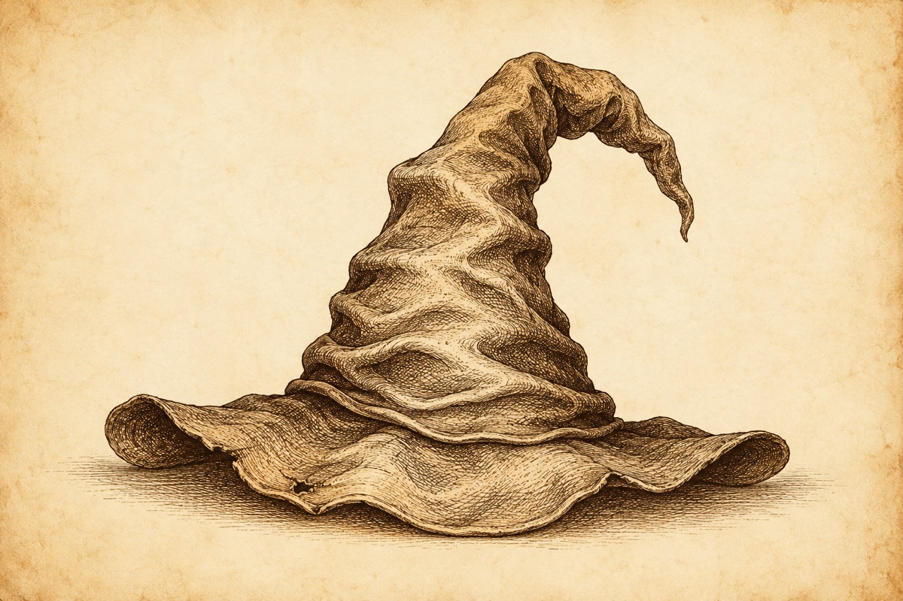
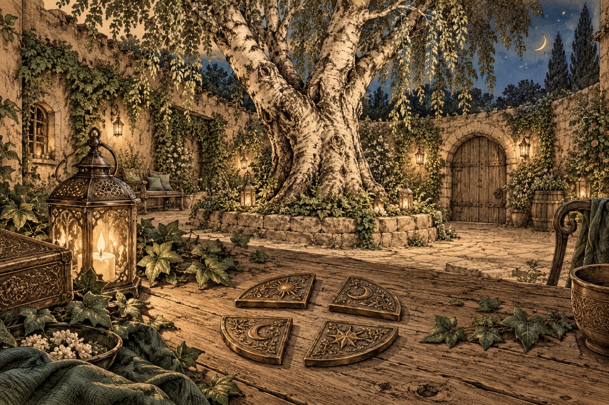
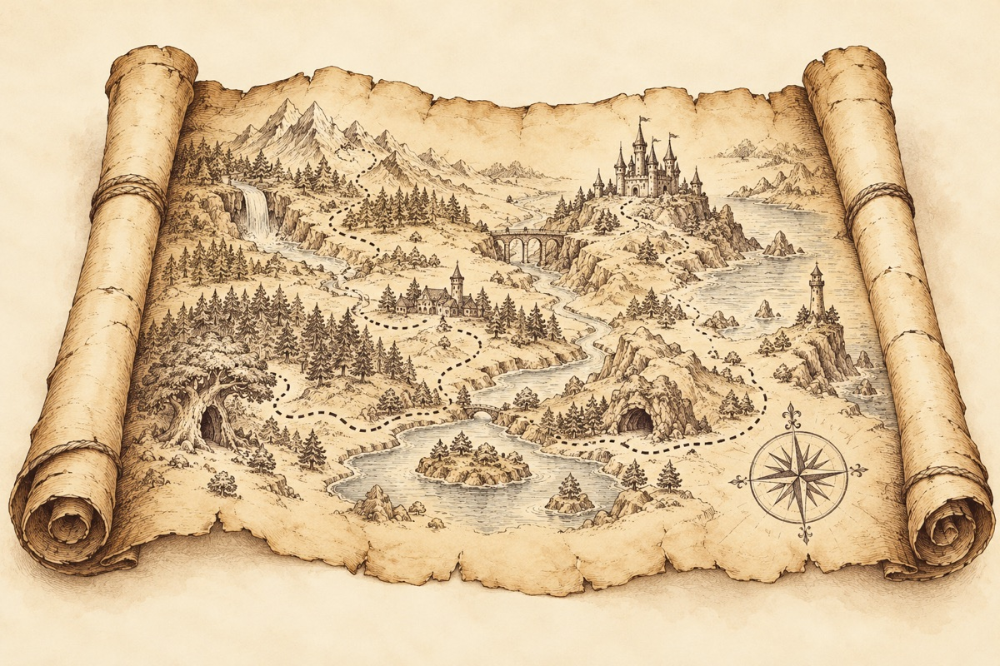
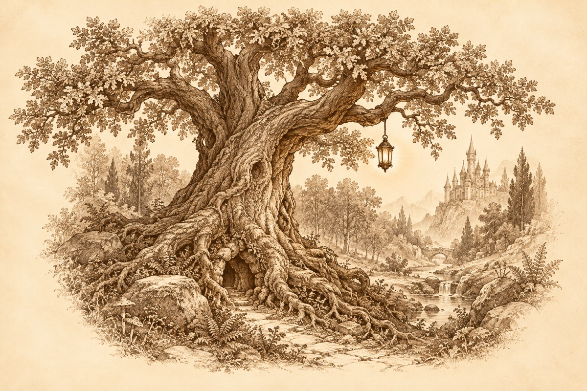
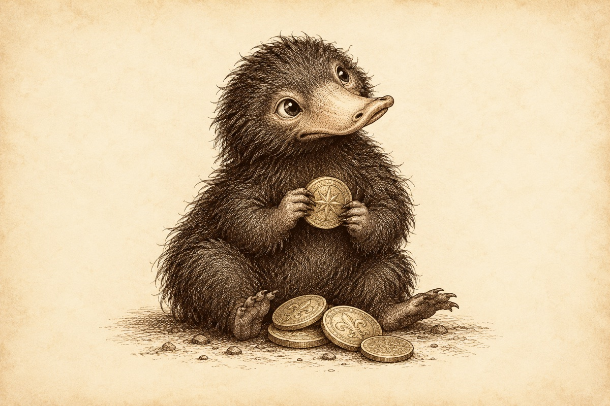
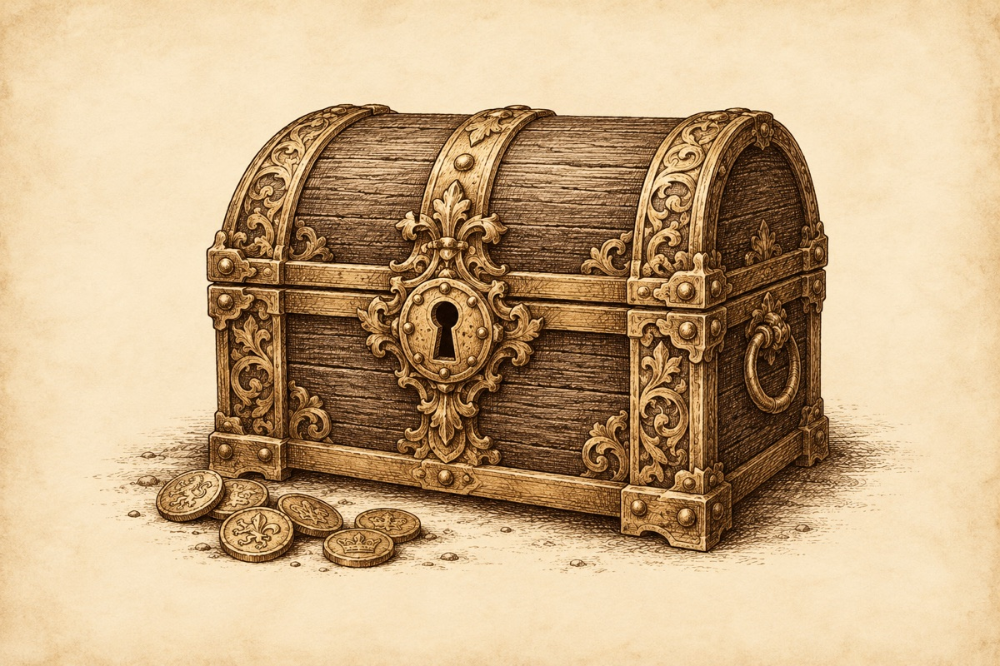
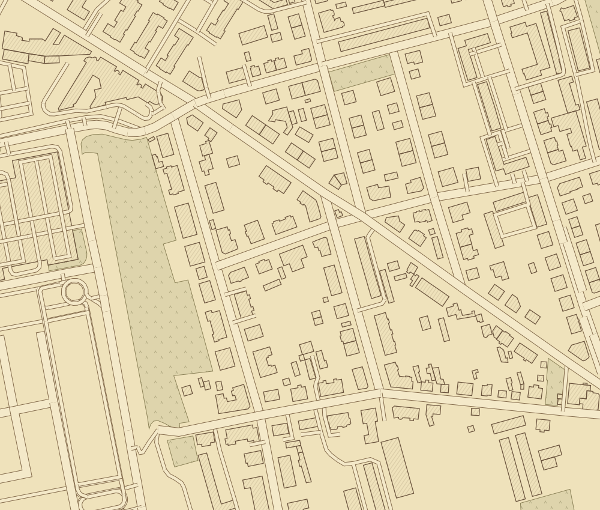

Euer Abenteuer beginnt.
Vier Häuser. Ein gemeinsames Geheimnis.
Der Hauspokal
Deine bisherigen Teststationen sind erhalten. Lade die Hogwarts-Route unter Spielleitung → Verwaltung, wenn du wechseln möchtest.
Der sprechende Hut

Die vier Häuser von Hogwarts

Eine Botschaft von Professor McGonagall
Wohin führt die Spur?

Bewahrt eure Tierkarten auf. Ihre Reihenfolge wird am Ende noch einmal gebraucht.
Das Ziel bleibt auf der Karte verborgen, bis ihr euch ihm nähert.
Gemeinsam geschafft
Der Hauspokal
Wer hat geholfen?
Jedes beteiligte Haus bekommt die gewählte Punktzahl einmal, auch wenn mehrere Kinder aus demselben Haus helfen.
Die Spur wartet auf euch

Magische Geschöpfe

Die Schatzkammer

Zusammen sind wir stärker.
Die Spielleitung
Bereitet eure Spuren vor. Fotos, Fundorte und Spielstand bleiben auf diesem Gerät.

Vorbereitete Geschichte
Zugang
Spiel begleiten
Schatzkammer
Hauspunkte
Häuser
Lokale Sicherung
Die exportierte Datei enthält eure Stationsfotos, GPS-Fundorte und Namen. Für das Übertragen auf ein anderes Team-Gerät könnt ihr sie dort importieren.
Test auf dem iPhone
- Über HTTPS öffnen und zum Home-Bildschirm hinzufügen.
- Von dort starten und auf „Offline bereit“ warten.
- Stationen vor Ort vorbereiten und speichern.
- Flugmodus ein, WLAN aus, Standortdienste an.
- Spur aufnehmen und App sichtbar lassen.
- Nach Station 1 schließen und erneut öffnen: Fortschritt prüfen.
Die Spielleitung ist durch eine lokale Eltern-PIN gesperrt. Nach dem Verlassen oder Ausblenden der App wird erneut die PIN verlangt. Die PIN bleibt auf diesem Gerät und wird nicht mit der Sicherung exportiert. GPS-Suche pausiert bei gesperrtem Bildschirm. Lokale Daten können vom Browser bei Speichermangel gelöscht werden.
Eurer Spur folgen
Die Karte führt euch von Ort zu Ort. Nehmt eine Spur auf und lasst die App geöffnet. Rostrote Fußspuren zeigen eure Position; der helle Kreis zeigt, wie genau sie ist.
Der nächste Zielmarker bleibt verborgen. Entschlüsselt den Ortshinweis; erst innerhalb von ungefähr 20 Metern und nach zwei ausreichend genauen GPS-Messungen erscheint das Ziel. Am richtigen Ort öffnet sich das Rätsel. Nach einer richtigen Antwort erhaltet ihr ein Hausviertel und öffnet mit „Nächste Spur öffnen“ den nächsten Ortshinweis. Das Finale führt euch zur Birke zurück.
Die Schatzkammer braucht die vier Hausviertel und den Wappencode aus dem Finale. Die Niffler-Aufgabe ist bereits Teil der Route; es sind keine zusätzlichen Geschöpfe-Prüfungen nötig.
Bei ungenauem GPS kann die Spielleitung den Fundort bestätigen.
Keine Live-Synchronisation zwischen mehreren Geräten. Die Karte bietet Orientierung, keine Straßen-Navigation.
Kartendaten: © OpenStreetMap-Mitwirkende, ODbL. Eigene Darstellung; Stand 20.10.2026. Kartendaten herunterladen.